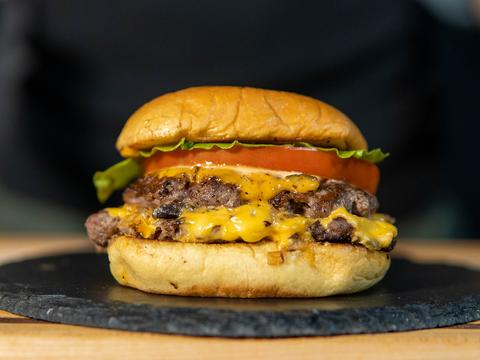

Description
The juicy meat, crispy crust, the oozy cheese on a toasted, but soft bun and the burger sauce, who can forget the burger sauce.
A smash burger is the easiest (and tastiest IMO) way you can prepare a burger at home.
Ingredients
- Two 3 oz (85 g) balls of 80/20 beef + Salt & Pepper
- Browned onions (1/2 onion + 2 TBSP butter)
- Slice of American cheese
- Martin's potato roll
- Lettuce
- Tomato, thinly sliced
Steps
- First we will make our sauce. In a bowl, mix together:
1/2 cup of mayo, 1 tbsp of ketchup, mustard, sweet relish, fresh onion(grated/minced), 1 chile in adobo sauce,
1/4 tsp smoked paprika and fresh cracked pepper, 1/8 tsp of celery and kosher salt.
- Next, it is time for our burger.
Heat your cast iron pan or griddle to medium heat for about 5 minutes.
Right before cooking the smashed burgers, put them on high heat.
- Sprinkle your balls of meat with salt and pepper right before and plop them on the griddle.
Immediately smash the burger into the griddle, applying firm and even pressure.
Lift up and do not touch the burger.
It needs to remain untouched for crust development.
- After a minute or two, the crust should have developed.
Flip your metal spatula upside down and scrape all along the edges to make sure that the brown crust is intact.
Once the crust is released, flip the burger over.
- Moving quickly, add some browned onions to one burger and a slice of American cheese.
After another 30 seconds.
Add slide the other patty on the cheese and assemble the burger in the following layers:
bottom bun, sauce, smashburger, onions, cheese, smashburger, tomato, lettuce, sauce, top bun. Devour!
Return to main menu